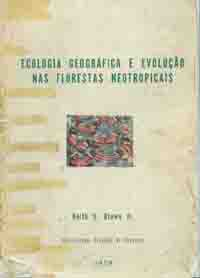

|  |
Keith S. Brown, Jr. 1979. Ecologia Geográfica e Evolução nas Florestas Neotropicais. 2 vols. (Tese apresentada à Universidade Estadual de Campinas como parte das exigências de um Concurso de Livre Docência, area de Ecologia). Universidade Estadual de Campinas, Campinas, Brazil. |
The first
volume contains the main text, and the distribution maps of the species
covered. The second volume contains a complete gazeteer of neotropical
place
names, as well as distribution data to 0.25 deg. accuracy.
| Vol. 1 INTRODUCTORY MATERIAL cover, pp. i-ii, ix-x, xix-xxxi, 57 (1.31 MB) |
Vol. 1 MAPS: HELICONIINA pp. 58-74 (1.12 MB) |
Vol. 1 MAPS: ITHOMIINAE pp. 75-87 (0.97 MB) pp. 88-101 (0.91 MB) |
Vol. 2 Distribution data: Apéndice II pp. 25-41: Mexico, Central America, French Guiana, Suriname & Guyana (1.13 MB) |
Vol. 2 Distribution data: Apéndice II pp. 42-63: Venezuela, Colombia, Ecuador (1.23 MB) |
Vol. 2 Distribution data: Apéndice II pp. 63-76: Peru, Bolivia, Argentina, Uruguay, Paraguay (0.90 MB) |
Vol. 2 Distribution data: Apéndice II pp. 77-109: Brasil (1.94 MB) |
| INTRODUCTORY MATERIAL | |
| Cover | |
| p. i | Title page |
| p. ii | Copyright information |
| p. ix | Index |
| p. x | Index continued |
| p. xix | Resumo (Portuguese) |
| p. xx | Resumo continued (Portuguese) |
| p. xxi | Resumo continued (Portuguese) |
| p. xxii | Resumo continued (Portuguese) |
| p. xxiii | Resumo continued (Portuguese) |
| p. xxiv | Resumo continued (Portuguese) |
| p. xxv | Summary (English) |
| p. xxvi | Summary continued (English) |
| p. xxvii | Summary continued (English) |
| p. xxviii | Summary continued (English) |
| p. xxix | Summary continued (English) |
| p. xxx | Summary continued (English) |
| p. xxxi | Summary continued (English) |
| p. 57 | Key and Legend for Figures 5-84 (pp. 58-101) |
| & Maps of Centres of Endemism | |
| DISTRIBUTION MAPS: HELICONIINA (FIGS. 5-32) | |
| Note: [Names given below
in square brackets represent nomenclature revised
according to Gerardo Lamas et al. (2002, in press)]. |
|
| p. 58 | Figure 5 Eueides procula |
| Figure 6 E. lineata, E. libitina, E. emsleyi | |
| p. 59 | Figure 7 Eueides lampeto |
| Figure 8 E. pavana | |
| Figure 9 E. eanes [E. heliconioides] | |
| p. 60 | Figure 10 Some geographic races of Eueides lybia |
| Figure 11 E. tales | |
| p. 61 | Figure 12 Neruda godmani and a geographic race of N. metharme |
| Figure 13 N. aoede | |
| p. 62 | Figure 14 Heliconius hecuba |
| Figure 15 H. xanthocles | |
| p. 63 | Figure 16 Heliconius hierax, H. wallacei (part), H. nattereri |
| Figure 17 H. burneyi (part), H. egeria, H. astraea | |
| p. 64 | Figure 18 Heliconius numata |
| p. 65 | Figure 19 Heliconius ismenius |
| Figure 20 H. pardalinus | |
| p. 66 | Figure 21 Heliconius hecale |
| p. 67 | Figure 22 Heliconius atthis, H. ethilla |
| p. 68 | Figure 23 Heliconius cydno superspecies (H. cydno, pachinus, heurippa, timareta, luciana, elevatus, besckei) |
| p. 69 | Figure 24 Heliconius hecalesia, H. telesiphe |
| Figure 25 H. hortense, H. clysonymus | |
| p. 70 | Figure 26 Heliconius melpomene |
| p. 71 | Figure 27 Heliconius erato [including H. himera] |
| p. 72 | Figure 28 Heliconius sara |
| p. 73 | Figure 29 Heliconius demeter |
| Figure 30 H. hewitsoni, H. antiochus | |
| p. 74 | Figure 31 Heliconius eleuchia, H. congener |
| Figure 32 H. sapho | |
| DISTRIBUTION MAPS: ITHOMIINAE (FIGS. 33-84) | |
| p. 75 | Figure 33 Eutresis dilucida, Roswellia acrisione [now Athesis acrisione] |
| Figure 34 Patricia oligyrtis, Olyras insignis | |
| Figure 35 Patricia dercyllidas, Athyrtis mechanitis | |
| p. 76 | Figure 36 Eutresis hypereia |
| Figure 37 Olyras crathis | |
| p. 77 | Figure 38 Elzunia pavonii, E. humboldt |
| Figure 39 Tithorea tarricina | |
| p. 78 | Figure 40 Tithorea harmonia |
| p. 79 | Figure 41 Melinaea mnasias |
| Figure 42 M. marsaeus | |
| p. 80 | Figure 43 Melinaea lilis [including M. scylax], M. ethra [including M. ethra (ethra) and part of M. satevis] |
| p. 81 | Figure 44 M. ludovica [consisting of M. ludovica, M.
idae (idae + vespertina)
and part of M. satevis (satevis, aurantia + crameri)] |
| Figure 45 Melinaea maenius [consisting of M. isocomma (isocomma, simulator, ssp. nov), M. menophilus (part)] | |
| p. 82 | Figure 46 Melinaea menophilus |
| Figure 47 Sais rosalia | |
| Figure 48 Forbestra proceris, Sais browni | |
| p. 83 | Figure 49 Forbestra equicuola |
| Figure 50 F. olivencia | |
| p. 84 | Figure 51 Mechanitis polymnia |
| p. 85 | Figure 52 Mechanitis lysimnia |
| p. 86 | Figure 53 Mechanitis menapis, M. mazaeus |
| p. 87 | Figure 54 Scada kusa, S. karschina, S. zibia |
| Figure 55 S. zemira, S. reckia | |
| p. 88 | Figure 56 Epityches eupompe, Garsauritis xanthostola [now Hypothyris xanthostola] |
| Figure 57 Placidula euryanassa [now Placidina euryanassa], Rhodussa cantobrica [now Hypothyris cantobrica] | |
| p. 89 | Figure 58 Napeogenes peridia [lamia is now in N. pharo] |
| Figure 59 N. cyrianassa [now in N. rhezia], N. achaea [quadrilis is separate species] | |
| Figure 60 N. cranto, N. harbona | |
| p. 90 | Figure 61 Napeogenes tolosa [larina now separate species], N. aethra [now N. larina] |
| p. 91 | Figure 62 Napeogenes stella [duessa, jamariensis &c are separate species, H. duessa] |
| Figure 63 N. omissa | |
| Figure 64 N. glycera | |
| p. 92 | Figure 65 Napeogenes apulia |
| Figure 66 N. sylphis | |
| p. 93 | Figure 67 Napeogenes pheranthes [now included within N. pharo] |
| Figure 68 N. inachia [pharo + N. pheranthes now in N. pharo] | |
| p. 94 | Figure 69 Hypothyris ninonia |
| Figure 70 H. meterus [now in H. mansuetus], H. connexa, H. thea | |
| p. 95 | Figure 71 Hypothyris fluonia |
| Figure 72 H. vallonia, H. semifulva | |
| p. 96 | Figure 73 Hypothyris gemella, H. daphnis, H. mansuetus |
| Figure 74 H. moebiusi | |
| p. 97 | Figure 75 Hypothyris leprieuri |
| Figure 76 H. mamercus | |
| p. 98 | Figure 77 Hypothyris euclea |
| p. 99 | Figure 78 Hypothyris lycaste, H. anastasia |
| p. 100 | Figure 79 Hyalyris fiametta, H. coeno |
| Figure 80 H. latilimbata [now monotypic - munda is form of H. antea frater, fassli is in H. mestra] | |
| Figure 81 H. juninensis, H. praxilla | |
| p. 101 | Figure 82 Hyalyris oulita, H. leptalina |
| Figure 83 H. frater [now included within H. antea] | |
| Figure 84 H. antea, H. excelsa |
{kind=link}